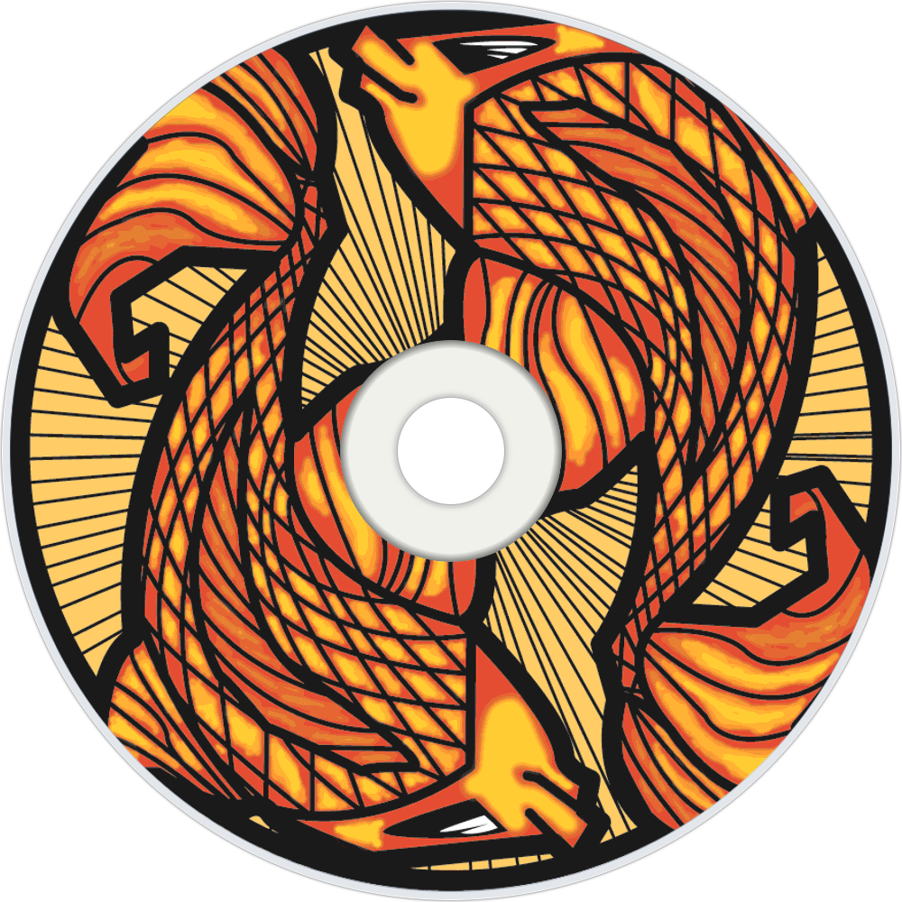

Descripción
La ilustración de los peces koi es la pieza artística central del cuarto álbum de estudio de Incubus, Morning View. La composición visual presenta carpas koi nadando en tonos acuáticos y cálidos, capturando la esencia fluida y orgánica que caracteriza la música del disco.
La pintura fue creada originalmente para el libreto interior del disco y se convirtió en una de las imágenes más emblemáticas de la banda.
Formato
- Dirección de arte por Brandon Boyd y Frank Harkins.
- Publicado en el libreto interior de CD, vinilo y cassettes oficiales de 2001.
Contexto
El guitarrista Mike Einziger pintó esta obra en la casa frente al mar en Malibú donde la banda vivió y grabó el álbum en 2001. En conjunto con la dirección de arte de Brandon Boyd y Frank Harkins, el diseño buscaba transmitir el estado de relajación y conexión marina vividos durante la producción del disco.